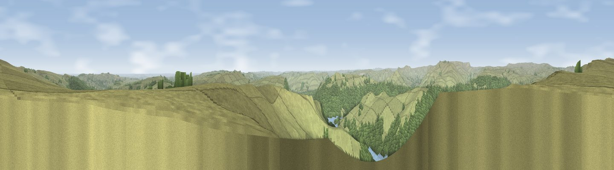

Viewpoint near Thornhill
#2415 in England · top 27% of its area beats it · near ThornhillWhere it is
The exact computed spot (NY 01862 08925). Click the marker for map links.
The view, rendered

A 360° render of this exact spot computed from the terrain model, tree cover and land cover — summer colours, afternoon light, calibrated against photographs of famous viewpoints. Real trees, hedges and buildings will differ in detail.
The panorama
Grey silhouette: terrain skyline in each direction (720 bearings, Earth curvature and refraction included). Dashed green: skyline with trees (+15 m) and buildings (+8 m) as obstacles. Blue strip: how far the ground is visible on each bearing.
Where the view opens
Wedge length = distance to the farthest visible ground on that bearing (vegetation-aware). Rings at 10, 25 and 50 km.
What fills the view
55% grassland · 15% water · 13% woodland · 12% cropland · 4% built-up
Angular shares of the visible panorama (visual magnitude), not map area. Landscape diversity 0.56 (0–1 Shannon).
Key numbers
More beautiful places nearby
The staircase of upgrades: each row has a higher view potential than everything closer. Driving times are estimates from straight-line distance, calibrated against real road routing — check an actual route before setting out.
| Place | Direction | Drive | Score |
|---|---|---|---|
| Viewpoint near Cleator | NNE · 3 km | ~8 min | 80.4 |
| Dent [Long Barrow] | NNE · 5 km | ~10 min | 84.5 |
| Viewpoint near Cleator | NNE · 5 km | ~10 min | 86.1 |
| Crag Fell | NE · 10 km | ~19 min | 89.1 |
| Ullock Pike | NE · 30 km | ~47 min | 89.4 |
| Long Side | NE · 30 km | ~47 min | 89.5 |
| Viewpoint near Finsthwaite | ESE · 42 km | ~62 min | 90.3 |
| The Knoll | S · 424 km | ~401 min | 91.0 |
54.46618, -3.51564 · source: screening · position refined by local search. Computed location — check access rights before visiting.